Stop treating the context window as invisible plumbing. Measure what enters, remove what does not serve the job, and move independent work into focused agents.
Video spine · 73:20
12 techniques · 4 levels
Core lab · 75–120 min
12 verified 1920×1080 frames
Mastery promise. By the end, you will be able to inspect a window before and after a change, sort all twelve techniques into Reduce and Delegate, distinguish sub-agent from primary-agent isolation, remount a prior session with a context bundle, and run the course’s plan/build/improve loop without hand-typing application code.
RReduce
Remove, defer, scope, or shorten context in the primary agent. You are protecting attention, not chasing the smallest bill.
DDelegate
Move a coherent job into another context window, then return only the result the primary agent needs.
Context engineering begins when you stop asking only, “What information might help?” and begin asking, “What should this particular agent process on every next turn?”
1 · Hook — the invisible third-full window
A capable model can still be drowned before the first real prompt
The recording opens a fresh Claude Code session and discovers that 63,000 of 200,000 tokens—31% of the available window—are already occupied. The user has not yet performed the difficult work. MCP tool definitions account for 24,100 tokens, and memory files account for 23,700. If you judge only the prompt you are about to type, you miss nearly the entire operating state that will answer it.
This is the chapter’s concrete failure: a model can be more capable than the work requires and still underperform because the window is carrying irrelevant tools, automatic memory, stale conversation, and verbose replies. The failure looks like “the model wandered.” The cause may be that the agent was never focused.
2 · Picture — two legal moves
Everything you do to a window belongs in R or D
Reduce from the primary window
Measure first. Remove unused MCP definitions. Shrink always-on memory. Cap response prose. Reset and reload known context. Control what the agent reads.
Delegate into another window
Give scraping to sub-agents. Separate planning from building. Fire independent primary agents. Encode focused experts. Return concise reports across boundaries.
Reduction changes what one agent processes. Delegation changes which agent processes it. Several techniques do both: the architect/editor split delegates exploration to a planner so the builder’s window is reduced; one-agent-one-purpose uses decomposition to protect every window in the pipeline.
3 · Story — Dan names the framework
Reduce and Delegate becomes the chapter’s sorting rule
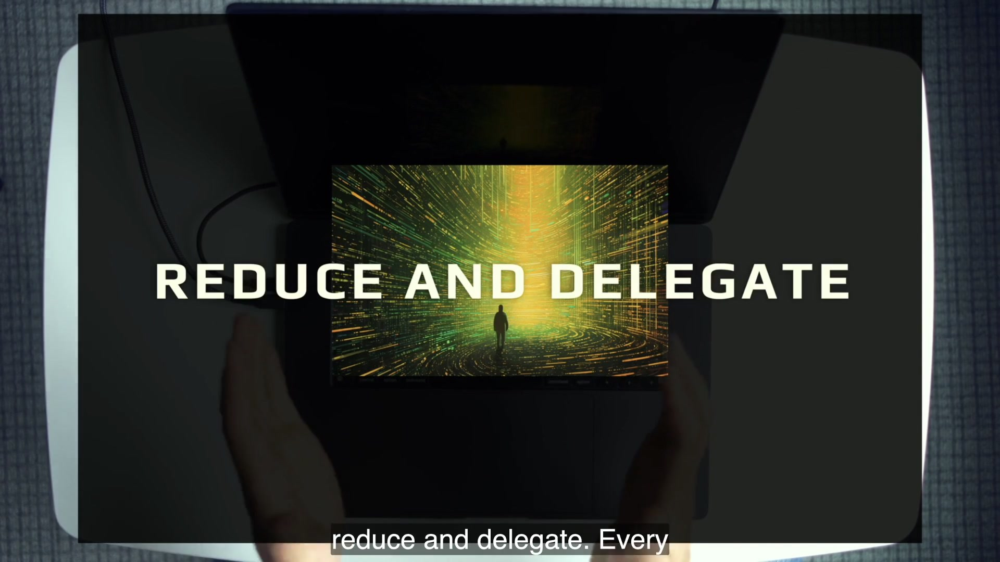
02:56The title card gives you the first retrieval target: there are only two ways to manage the window—Reduce and Delegate.
The lesson repository makes that sentence executable. Its 301-line README.md labels twelve techniques by level and framework. Its .claude/ directory contains the machinery: priming commands, output styles, sub-agent definitions, hook-built bundles, a background-agent launcher, and the plan/build/improve expert triad. The repository is not a neutral sample application. It is a context-engineering exhibit.
4 · Name it — Dan’s vocabulary
R&D, context sweet spot, search and destroy
The context sweet spot is the useful range in which the agent has enough information for the task without being diluted by unrelated material. Search and destroy means finding the right context agentically, then removing or delegating everything else. Context bloat is excess material; context rot is material that has become stale, irrelevant, or contradictory. The vocabulary is operational: each term tells you what to inspect or change.
5 · Worked example — classify the twelve techniques
Four levels, one framework
Level 1Beginner
Measure to manage
Avoid idle MCP
Prime, don’t default
Level 2Intermediate
Control output tokens
Use sub-agents properly
Architect / editor
Level 3Advanced
Reset and prime
Use context bundles
One agent, one purpose
Level 4Agentic
Modify system prompt
Primary delegation
Agent experts
Technique 1 is the foundation: you cannot prove either R or D worked without measuring. Techniques 2, 3, 4, 7, 8, and 10 are principally Reduce. Techniques 5 and 11 are principally Delegate. Techniques 6, 9, and 12 use both. The categories are not badges; they are a debugging question. If the primary agent is unfocused, will you remove context or move a coherent responsibility elsewhere?
6 · You try — ninety-second window audit
Adopt the agent’s perspective before touching a setting
Write the single purpose of your current agent in one sentence.
List what it has already seen: memory, prompts, files, tool definitions, outputs.
Mark each item needed now, possibly later, or belongs to another job.
Circle one Reduce move and one Delegate move. Do not perform either until Technique 1 gives you a baseline.
The exercise passes only if you reason from the agent’s next turn. “I like having all tools available” is the human’s convenience. “This agent needs one scraper for this task” is the agent’s context requirement.
7 · Common fail + fix
Failure: treating context engineering as a bigger prompt
Symptom: every difficulty is answered by adding instructions and files. The prompt becomes more explicit, but the surrounding state remains invisible and keeps growing.
Fix: separate prompt quality from window quality. A bad prompt can waste a perfect window; a bloated window can dilute a good prompt. Inspect both. Use the R&D question at each boundary: can the primary agent avoid processing this, or should a different focused agent own it?
8 · Current practice — durable principle
Window sizes and model names move; attention remains the constraint
9 · Retrieval — close the section first
What are the only two ways to manage a context window?
Reveal answer
Reduce context from the primary agent and Delegate coherent work/context to another focused agent.
What is the one-line law behind all twelve techniques?
Reveal answer
A focused agent is a performant agent.
Why is “add everything that might help” not context engineering?
Reveal answer
It does not manage attention. It ignores relevance, timing, contradiction, and which agent should own the work.
10 · Teach-back
Teach this in sixty seconds: define R&D, give one pure Reduce example, one pure Delegate example, and one technique that does both. Finish with why a larger window does not remove the need for focus.
Pass if your listener can use the framework to decide what to do with one irrelevant file or one independent research task.
01
Technique 1 · Measure to manage
A context change without a before and after is a story. This technique turns every later technique into an observable intervention.
Technique 01BeginnerFoundation for R&D
1 · Hook — optimize the thing you can see
The agent is already processing more than your prompt
You type six words and receive a wandering answer. If your only measurement is the six words, your diagnosis starts in the wrong place. Claude Code’s /context view exposes system prompt, system tools, MCP tools, custom agents, memory files, messages, and free space. A tokenizer in the editor answers the complementary question: what will this file cost before the agent reads it?
The two tools look in opposite directions. /context audits the loaded state. The file token counter estimates an incoming payload. You need both because a healthy boot can still be ruined by reading a giant file, and a small target file can still enter an already unhealthy boot.
2 · Picture — read the composition, not only the total
31% occupied is a clue; the categories identify the levers
The percentages matter because the next action should target the dominant controllable categories. MCP and memory are not abstract complaints in this baseline; together they account for almost 48,000 tokens. The tiny custom-agent line is a clue Technique 5 will exploit.
3 · Story — the whole before-state in one frame
Dan measures before prescribing
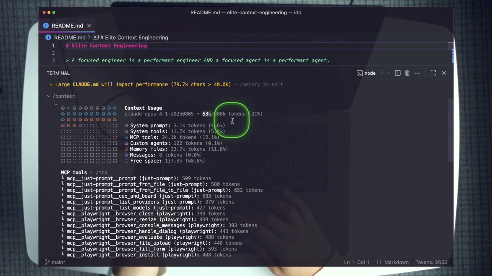
04:26The recorded baseline shows 63k/200k used, MCP at 24.1k, memory at 23.7k, a large-CLAUDE.md warning, and the README token counter at 2,650. Treat the numbers as period detail and the breakdown habit as the lesson.
Notice the sequence. Dan does not begin by deleting a config because “MCP feels heavy.” He exposes the cost, names the category, and preserves a frame that later techniques can compare against. That makes improvement falsifiable. If MCP shrinks but total context does not, another category may have grown. If memory shrinks but the next task performs worse, the prime may have omitted necessary context.
4 · Name it
Measure to manage
This is not a request to minimize every number. A complete plan may be worth thousands of tokens if it prevents three failed implementations. Measurement supports allocation. The engineering question is whether each occupied region earns its place for this agent’s purpose.
5 · Worked example — build a context ledger
Record categories before changing any configuration
Measure
Recorded demo
What it can reveal
Likely next technique
Total / free
63k used · 137.3k free
Overall pressure and available runway
Choose after inspecting categories
MCP tools
24.1k
Always-loaded server definitions
T2 · scope MCP
Memory files
23.7k
Automatic project instructions
T3 · shrink and prime
Custom agents
122
Small primary-window definitions
T5 · delegate isolated work
README.md
~2,650 before read
Incoming high-touch file cost
Decide whether this prime needs it
Your own ledger will differ. Preserve the units that /context reports, the timestamp or checkpoint, and what you changed next. The lab grades the direction and your explanation, not a forced reproduction of Dan’s machine.
6 · You try — baseline checkpoint
Write the numbers before learning the cure
From the course codebase, boot claude and run /context.
Record total percentage, System tools, MCP tools, Custom agents, Memory files, and Free space.
Open README.md and record the IDE token estimate before asking the agent to read it.
Predict the two largest controllable consumers. Do not change them yet.
Checkpoint 0 passes when you can explain every recorded line. A screenshot without interpretation is not measurement literacy.
7 · Common fail + fix
Failure: measuring once, then trusting memory
Symptom: you run /context at boot, make three changes, and remember only that the bar “looked better.” Or you compare your count to the video and treat a mismatch as failure.
Fix: pair every meaningful R or D move with before/after evidence. Annotate what changed between samples. Compare your machine to itself. Models, tool schemas, global configuration, and repository state shift the absolute numbers.
8 · Current practice — grade the delta
Period numbers are calibration examples, not targets
9 · Retrieval
What does /context tell you that a file token counter does not?
Reveal answer
The exact category breakdown already loaded into the agent’s window.
What does the file counter tell you that /context does not?
Reveal answer
The estimated cost of a file before you add it to the window.
10 · Teach-back
Explain the recorded 31% boot state to a colleague without saying merely “too many tokens.” Name the two dominant categories, the two measurement tools, and why only a before/after on the same machine proves an intervention.
02
Technique 2 · Avoid MCP servers you do not need
A tool you might call later can charge rent on every prompt now. Load the smallest server surface that serves this agent’s actual purpose.
Technique 02BeginnerReduce
1 · Hook — the unused-tool tax
The most expensive context may be a capability you never invoke
The recorded fresh session pays 24,100 tokens for MCP tool definitions. The agent has not yet used those tools. Their schemas are present so the model can decide whether and how to call them, which means “available just in case” is not free. The course’s rough scaling example makes the waste visible: about 24k unused tokens across five agents in an hour is roughly 120k tokens—more than half of the recorded 200k window and approximately a quarter of five windows’ combined capacity.
The lesson is not “MCP is bad.” The lesson is temporal scope. A server is valuable in the session that needs it and bloat in the session that does not. The default should therefore be no server, followed by deliberate loading of the specific configuration required for the job.
2 · Picture — scope before startup
Project defaults, global defaults, and one strict instance
Broad default
A project .mcp.json or user/local server is automatically available. Every new agent may inherit definitions whether the task uses them or not.
Task-scoped instance
Start with --mcp-config .mcp.json.firecrawl_7k.sample --strict-mcp-config. Only that file’s servers are available to this instance; global servers are overridden.
The shipped repository makes costs legible in filenames: .mcp.json.firecrawl_7k.sample is the single-server option; .mcp.json.all_16k.sample mounts Playwright and Firecrawl; .mcp.json.sample is also a two-server project example. The suffix is a planning hint, not a promise that every future tool version will tokenize identically.
3 · Story — one server, visible reduction
The MCP line falls from 24.1k to 6.5k
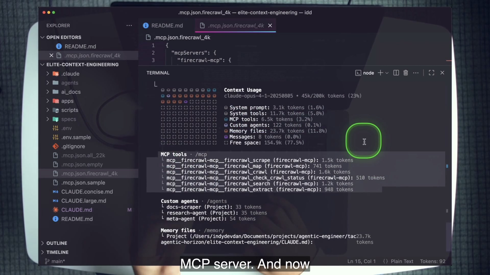
08:25After a Firecrawl-only strict configuration, the recorded MCP category drops to 6.5k (3.2%) and total context to 45k/200k. The file tree uses on-camera sample names that differ from the shipped repository.
This is a clean Reduce experiment because the category targeted by the configuration is the category that falls. The agent keeps a tool relevant to documentation fetching and discards unrelated schemas. Capability is not removed from the entire system; it is removed from this one agent’s startup state until needed.
4 · Name it
Load exactly what you need
“Avoid” means avoid idle definitions, not avoid tool use. A focused agent with the one required server is more capable for its actual purpose than an agent spending attention on every possible tool. This is search and destroy applied before the session begins.
5 · Worked example — choose from shipped files
Match the configuration to the job
Course file
Servers in shipped file
Use when
Do not infer
.mcp.json.firecrawl_7k.sample
Firecrawl only
The agent must scrape documentation
That the exact count is permanently 7k
.mcp.json.all_16k.sample
Playwright + Firecrawl
The same agent genuinely needs both surfaces
That “all” is a sensible default
.mcp.json.sample
Playwright + Firecrawl
Reference for a project config
That it should be renamed to active .mcp.json
No MCP config
None from this project
The task needs only built-in tools
That global servers are absent unless strict mode verifies it
claude \
--mcp-config .mcp.json.firecrawl_7k.sample \
--strict-mcp-config
Run /context immediately after startup and compare the MCP category with your baseline. The proof is the category delta plus confirmation that the required server still appears.
6 · You try — remove “just in case”
Perform one controlled MCP reduction
Record your current MCP token count.
Exit the session. Relaunch with the shipped Firecrawl-only sample and --strict-mcp-config.
Run /context again and record MCP tokens, total, and free space.
Write one sentence explaining what strict mode prevented from leaking into the comparison.
The drill is complete when you can cite the before and after and still identify the one server you intentionally retained.
7 · Common fail + fix
Failure: renaming a broad sample into the default project config
Symptom: every project session loads two servers because the file is convenient, while only the documentation task uses Firecrawl and no current task uses browser automation.
Fix: keep the samples self-describing, invoke the narrow one explicitly, and use strict mode when global configuration would contaminate the experiment. If a later task needs a different server set, launch a different focused agent.
8 · Current practice — screen versus shipped tree
Teach from disk; use the frame as historical evidence
9 · Retrieval
What two flags create a task-scoped MCP instance?
Reveal answer
--mcp-config <file> chooses the configuration; --strict-mcp-config overrides global servers for that instance.
Why is an unused MCP server a context problem before it is ever called?
Reveal answer
Its tool definitions are loaded so the model can reason about them, consuming the window on every prompt.
10 · Teach-back
Teach the difference between “MCP is bad” and “idle MCP is bloat.” Use the Firecrawl-only command, the recorded 24.1k → 6.5k result, and the shipped/on-screen filename difference.
03
Technique 3 · More prime, less CLAUDE.md
The same automatic memory file is powerful because it is always loaded and dangerous because it is always loaded. Keep only true universals; pull task context on demand.
Technique 03BeginnerReduce
1 · Hook — convenience becomes contradiction
A memory file grows by addition but rarely by subtraction
A team learns one convention and appends it. A framework changes and the old convention remains. A subsystem needs a special instruction and the root file absorbs it. Eventually every agent pays for thousands of lines, even when the current task touches none of them. Worse, irrelevant context can become contradictory context and actively steer the model away from the code in front of it.
The course exaggerates the pattern deliberately. CLAUDE.large.md is 2,978 lines and labels itself an anti-pattern of over-contextualization. The recorded session reports 23.7k memory tokens and warns that the 79.7k-character file exceeds the 40k warning threshold. The failure is not hidden.
2 · Picture — always-on versus task-scoped
Keep universals in memory; move changing context into commands
23.7k
CLAUDE.large.md · 2,978 lines · automatically loaded · recorded 11.8% of the window.
→
358
Concise 43-line memory · recorded 0.2% · then /prime loads the task-specific codebase view.
The split is semantic, not just quantitative. CLAUDE.md holds rules asserted as universal: use Bun over npm/yarn, use uv over pip/Poetry, key commands, broad project structure, and development guidelines. /prime performs an observation at session time: run git ls-files, read README.md, summarize the codebase.
3 · Story — 92% free after the swap
The warning becomes a controlled before/after
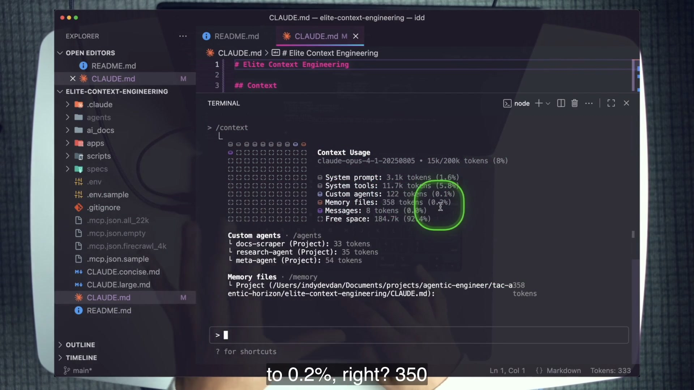
13:06With the concise 43-line file restored, recorded memory drops to 358 tokens (0.2%), total context to 15k/200k, and free space rises to 92.4%.
The key move happens after the reduction: priming puts back the context the job actually requires. /prime_cc demonstrates composability. It first executes the base prime.md, then reads .claude/commands/**, .claude/output-styles/**, context_bundle_builder.py, and settings.json. The agent that works on the agentic layer receives more context than a general codebase session—but only because its purpose demands it.
4 · Name it
Prime, don’t default
A prime is a reusable, inspectable loading procedure. It can be stacked, compared, and replaced. That turns context setup from a pile of inherited prose into a named operation. The course mentions possible task primes such as /prime_bug, /prime_feature, and /prime_testing; only /prime and /prime_cc ship here, so the others belong in stretch work, not claims about existing files.
5 · Worked example — read the two shipped primes
A base observation and a stacked specialization
.claude/commands/prime.md
Run:git ls-files. Read:README.md. Report: summarize the codebase. Eighteen lines create a general starting state.
.claude/commands/prime_cc.md
Execute the base prime, then read the commands, output styles, bundle hook, and settings. Twenty-one lines define the agentic-layer specialization.
# Prime
## Run
git ls-files
## Read
README.md
## Report
Summarize your understanding of the codebase.
The worked example shows why priming is not “tell the model everything.” It is an explicit recipe that another human can review and a student can measure. If the summary needs a file the prime omitted, change the prime for that task class; do not smuggle every possible file into root memory.
6 · You try — classify each line
Does it belong always, or only for this job?
Read the 43-line CLAUDE.md.
For each section, write universal or task-scoped. Do not edit during the core lab.
Read prime.md and prime_cc.md. Predict which files each loads.
Run /prime, then measure. In a fresh session run /prime_cc, then measure. Explain the difference by purpose.
The drill passes when you can justify why a larger measured window can be healthier if the extra context is deliberately aligned with the agent’s job.
7 · Common fail + fix
Failure: shrinking memory, then forgetting to restore the task model
Symptom: memory usage falls dramatically, but the agent repeatedly rediscovers the repository or edits without reading the operating layer.
Fix: couple reduction with an explicit prime. The objective is known context, not empty context. Keep universals automatic; make task observations named and repeatable; measure the resulting state.
8 · Current practice — more packages, same boundary
Always-on memory is still not a substitute for task setup
9 · Retrieval
Why is CLAUDE.md incredible and terrible for the same reason?
Reveal answer
It is always loaded: ideal for true universals, costly and risky when it accumulates irrelevant or contradictory context.
What does /prime_cc add to the base prime?
Reveal answer
It reads the Claude Code layer: commands, output styles, the context-bundle hook, and settings.
10 · Teach-back
Explain the 23.7k → 358-token contrast, then defend one line that belongs in always-on memory and one observation that belongs in a prime. Finish with why “less memory” without priming is incomplete.
04
Technique 4 · Control output tokens
The agent’s status prose is not outside the window. It is expensive output now and input on the next turn. Control the response layer without starving questions, errors, or requested evidence.
Technique 04IntermediateReduce
1 · Hook — the compounding reply
The file is done; the agent writes another paragraph about doing it
Suppose a workflow edits the right files and verifies the result. The useful artifact already exists. A default assistant may still narrate the plan, repeat the changes, restate the tests, offer next steps, and invite a follow-up. That reply consumes output tokens and then becomes conversation context. Repeat the pattern across hundreds of prompts and agents and a tiny social convention becomes a recurring window tax.
Dan frames the economics sharply: output tokens cost roughly three to five times input tokens in the lesson, and they return to context. You cannot remove the tokens required to write the repository files. You can remove redundant chat about work whose evidence is already available elsewhere.
2 · Picture — the response is a configurable layer
Same tool work, different report budget
~150
Recorded default-style completion response: explanation and status prose re-enter the conversation.
→
2
Recorded one-word response: Done. Roughly a 99% response reduction in the demonstration.
An output style hot-swaps the output-style block in Claude Code’s system prompt. The course ships five specimens: concise-done.md, concise-ultra.md, concise-tts.md, verbose-bullet-points.md, and verbose-yaml-structured.md. The point is not that the shortest always wins. The point is that response shape is an explicit engineering choice.
3 · Story — “hi” becomes “Done.”
The menu and the effect share one frame
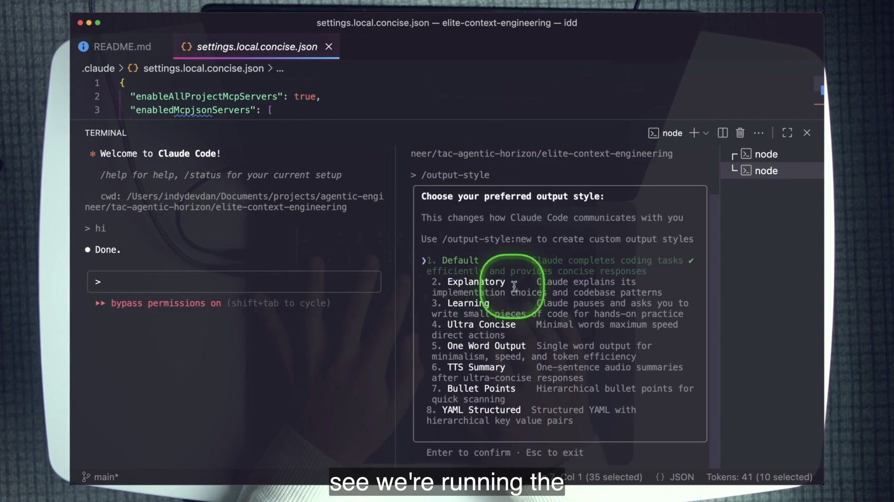
18:05Left: hi receives Done. Right: the output-style menu offers Default, Explanatory, Learning, Ultra Concise, One Word Output, TTS Summary, Bullet Points, and YAML Structured.
The shipped local settings file selects "outputStyle": "One Word Output". Its definition says respond only “Done.” 95 of 100 times, but it preserves three exceptions: an explicit request for a different response, a direct question, and an error or blocker. That distinction matters. Minimalism is useful only if it does not erase the information required for the next decision.
4 · Name it
Output styles and response budgets
Think in report contracts. A background worker may need a structured progress file. A human asking a question needs the answer. A completed mechanical step may need only “Done.” A debugging agent may need the exact error. The useful budget follows the consumer of the output.
5 · Worked example — inspect the exception design
Short by default, informative when state changes
Routine success
Done. The repository diff and test output are the evidence; more narration is redundant.
Question or blocker
One or two concise sentences answer the question or identify the error. Hiding a blocker would break the workflow.
{
"enableAllProjectMcpServers": true,
"enabledMcpjsonServers": ["firecrawl-mcp"],
"outputStyle": "One Word Output"
}
The settings specimen intentionally contains both an output choice and MCP choices. Measure the response delta separately from MCP state so one comparison does not claim credit for both. The lab uses identical prompts in two terminals to isolate the response style.
6 · You try — same prompt, two styles
Hold the task constant
Open two course-repository terminals.
Use the One Word Output style in one and leave the other at default.
Send hi to both, then ask, “What does this codebase do?”
Record the response-token difference and whether the concise style still answers the explicit question.
The experiment passes when you can explain why “Done.” is correct for routine completion but wrong as the answer to a requested explanation.
7 · Common fail + fix
Failure: optimizing away the evidence channel
Symptom: every response becomes “Done.”, including failed commands, ambiguous questions, and checkpoints that require numbers. The window is smaller but the system is no longer observable.
Fix: write explicit exceptions and make persistent artifacts carry detailed evidence. Short chat is safe when diffs, reports, test output, or checkpoint notes preserve what another actor needs.
8 · Current practice — a broader customization surface
The mechanism sits beside newer packages; the economics stay
9 · Retrieval
Why can output tokens create a compound context cost?
Reveal answer
They are costly to generate and their text returns as input context on later turns.
What three cases override “Done.” in the shipped style?
Reveal answer
An explicit request for another response, a direct question, and an error or blocker.
10 · Teach-back
Explain why a one-word output style changes the report layer rather than the work layer. Include the recorded ~150 → 2-token effect and one case where a longer response is necessary.
05
Technique 5 · Use sub-agents properly
A sub-agent is a partially forked context window. Its value is not “more AI”; it is keeping a large isolated job and its intermediate context away from the primary agent.
Technique 05IntermediateDelegate
1 · Hook — ten scrapes, one concise report
Do the expensive work without pouring its trail into the main window
Documentation scraping is a perfect delegation candidate. Each URL can be fetched independently. The raw page, fallback logic, extraction decisions, and file-writing trace are useful to the scraper but mostly irrelevant to the primary agent. If the primary agent performs every scrape itself, all that context competes with the engineering task that requested the docs.
The course’s /load_ai_docs command delegates one URL per docs-scraper sub-agent in parallel. Each sub-agent spends its own window, writes clean Markdown into ai_docs/, and returns a compact success/failure line to the primary agent. The main window retains the result map, not every scrape’s internal history.
2 · Picture — follow the information arrows
User → primary → sub-agent → primary
User/load_ai_docs
Requests a documentation refresh.
Primary agentTask × URLs
Reads the URL list, applies the age rule, and dispatches independent prompts.
Docs scrapersown windows
Fetch, clean, and write files in parallel.
Primary report✅ / ❌ + path
Receives reduced outcomes and reports to the user.
Sub-agents report to the primary agent, not directly to the human. That sentence prevents a common mental-model error. The primary agent decides how the returned summaries participate in the larger task.
3 · Story — custom agents cost 122 tokens
A small definition opens a separate working window
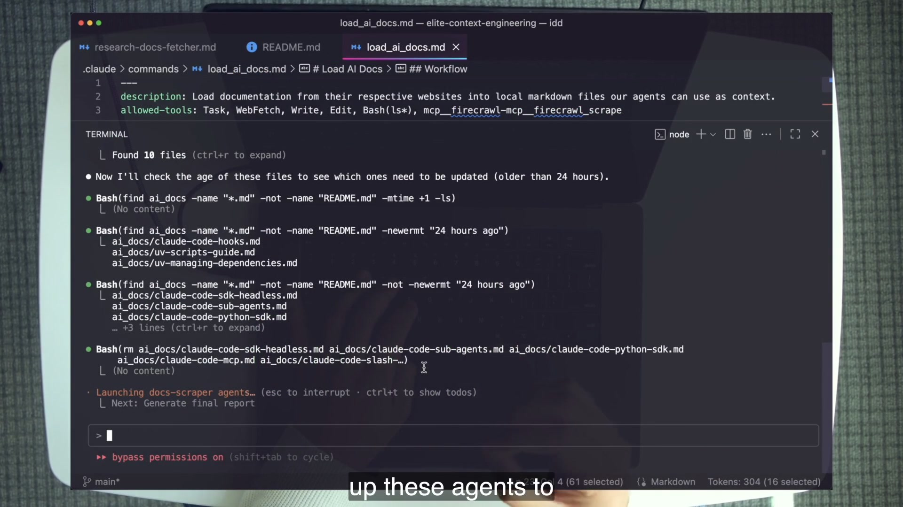
24:52The command finds ten URLs/files, removes stale documentation after the 24-hour rule, and launches docs-scraper agents. The recorded primary /context shows Custom agents at only 122 tokens.
Dan describes the sub-agent definition as a system prompt isolated from the primary conversation, which is why the recorded custom-agent category is tiny while a scraper may spend thousands of tokens. The delegation still has a return cost: the sub-agent’s report enters the primary agent. Proper use therefore requires a narrow task and a narrow report.
4 · Name it
Partially forked context window
“Partial” distinguishes this from Technique 11’s fully independent primary agents. A sub-agent is part of the primary agent’s orchestration surface. A background primary instance owns its own model, settings, keys, and file-based report channel.
5 · Worked example — trace /load_ai_docs
The command encodes a delegation contract
Read ai_docs/README.md for source URLs.
Check existing Markdown files against DELETE_OLD_AI_DOCS_AFTER_HOURS: 24.
Skip fresh files; delete stale files.
For each remaining URL, invoke the Task tool in parallel with the exact docs-scraper prompt.
Return ✅ or ❌, the URL, and the Markdown path.
The allowed tool surface makes the design inspectable: Task, WebFetch, Write, Edit, a narrow Bash(ls*), and the Firecrawl scrape tool. The primary command does not ask every sub-agent for a tutorial about scraping. It asks for a file and a status line.
6 · You try — track who knows what
Run the delegation, then audit the primary window
Record Custom agents and total context before the command.
Run /load_ai_docs in the course repository.
Identify which files were skipped, deleted, and written.
Run /context afterward and explain why scrape work did not appear as a giant primary conversation trace.
The checkpoint passes when you can draw the four arrows—user, primary, sub-agent, primary—and identify the file artifact and return report at the boundary.
7 · Common fail + fix
Failure: adding agents before you can trace one
Symptom: you cannot say who generated a prompt, which window read a page, or where the result returned. Sub-agents repeat work, return essays, or receive the entire primary transcript.
Fix: delegate tasks that can operate in isolation, pass the minimum input, and specify a reduced report. If you are losing track of a single agent’s context, master measurement before increasing the topology.
8 · Current practice — principle before fleet
More orchestration surfaces do not change the boundary test
9 · Retrieval
Why did custom agents occupy only about 122 tokens in the recorded primary window?
Reveal answer
The definitions are isolated system prompts; the sub-agents spend their own windows and return reduced results.
Who receives a sub-agent’s report?
Reveal answer
The primary agent, which uses or reports the result to the user.
10 · Teach-back
Using /load_ai_docs, explain why delegation can increase total token spending while improving the primary agent’s focus. Distinguish the scrape file, the sub-agent’s working context, and the concise report.
06
Technique 6 · Architect / editor
Let the planner spend context discovering the complete work, then let a fresh builder spend context only on the specification and implementation.
Technique 06IntermediateReduce via Delegate
1 · Hook — the builder that never had to search
Exploration and editing want opposite windows
A planner should inspect broadly, compare approaches, notice edge cases, and discover which files matter. That is intentionally expansive work. A builder should make surgical edits from a settled contract. Combining the two in one conversation means the implementer carries every dead end, rejected option, and exploratory read into the moment that demands precision.
The architect/editor pattern treats those as different purposes. The planner is allowed to “waste” tokens finding the right context because its product is a concise specification. A fresh builder reads that product and the target files, not the entire search history.
2 · Picture — an information bottleneck on purpose
Repository → planner → spec → builder → diff
ExploreRead · Glob · Grep
The planner gathers more than the builder should carry.
Specifyspecs/name.md
Objectives, approach, steps, risks, tests, and success criteria.
Build fresh/build path
A separate agent reads the settled plan and implements.
Reportgit diff --stat
The builder returns changed files and a concise summary.
The specification is a deliberate bottleneck. It compresses the useful result of exploration into an artifact another agent can consume. Unlike automatic conversation compaction, the plan has a visible schema and a single purpose.
3 · Story — planner left, builder right
The TypeScript wrapper crosses the boundary
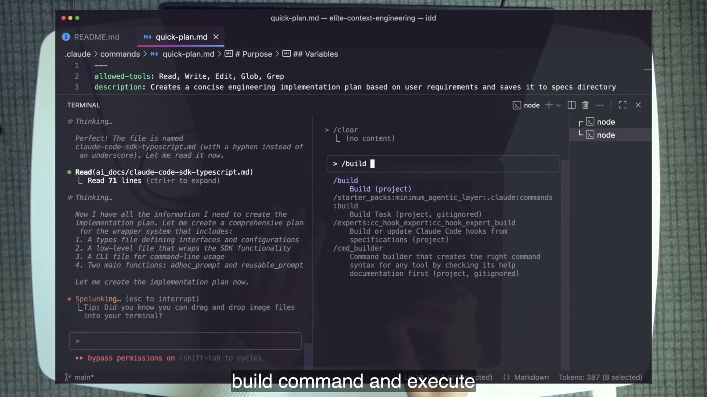
29:50The planner identifies a types file, low-level SDK wrapper, and CLI. A fresh agent clears its state and runs /build from the written plan.
The shipped result lives in apps/cc_ts_wrapper/. types.ts defines settings, reusable prompt configuration, results, and defaults. core.ts wraps the SDK query() call through adhoc_prompt(), a registry, and reusable_prompt(). cli.ts exposes direct prompts plus built-in /analyze and /refactor commands. The three-file shape visible in the planner’s thought becomes a legible implementation boundary.
4 · Name it
Architect / editor, planner / builder
The labels emphasize responsibility rather than hierarchy. The architect is not inherently smarter; it owns discovery and decisions. The editor is not a typist; it owns faithful implementation and evidence. The boundary makes failures easier to localize: incomplete contract or incorrect build.
The shipped quick-plan.md pins a course-era Opus model ID. The plan’s capability comes from its role and contract, not that exact identifier. If the pinned model is unavailable when adapting the course, update the frontmatter before the lab; do not pretend the old ID is current.
6 · You try — fresh builder test
Prove the plan carries the hand-off
Ask /quick-plan for a tiny helper in apps/cc_ts_wrapper.
Review the written spec for target files, behavior, tests, and success evidence.
Open a fresh agent. Do not prime the full repository.
Run /build <spec-path> and compare the diff to the plan.
The checkpoint passes if the builder can act from the plan alone. If it must rediscover the whole codebase, repair the plan rather than stuffing the planner’s transcript into the builder.
7 · Common fail + fix
Failure: prompt-chaining in one window and calling it two roles
Symptom: the same agent explores, debates, plans, receives corrections, and implements. A “now build it” prompt changes the label but not the context state.
Fix: materialize the plan, clear or open a fresh agent, and pass only the artifact. Keep the planner’s decision record where the builder can inspect it without inheriting every discarded path.
8 · Current practice — model IDs drift, seams endure
The two-agent seam is the lesson
9 · Retrieval
Whose job is it to “waste” tokens, and why?
Reveal answer
The planner’s. It explores broadly to create a complete, reduced specification for the builder.
What proves the builder’s window is truly fresh?
Reveal answer
A separate or cleared agent implements from the plan artifact without inheriting the planning conversation.
10 · Teach-back
Walk a colleague through repository → planner → spec → builder → diff. Explain why the planner may spend more tokens so the builder can spend fewer and edit more precisely.
07
Technique 7 · Avoid /compact: reset and prime
Dan’s stance is deliberately strict: when the work must run out of loop, a known fresh state is more valuable than a convenient compressed state you must rediscover.
Technique 07AdvancedReduce
1 · Hook — the unknown summary
After compaction, what exactly survived?
You reach a long session’s limit and invoke /compact. Work can continue, but your operating state is now a summary selected by the compaction process. Which file facts survived? Which decisions were compressed into a vague sentence? Which rejected path still sounds active? Dan points out that you must use transcript mode to inspect what remains. That means the agent’s state is decent perhaps, but not known until you look.
Unknown state is tolerable when a human stays present to catch drift. It becomes dangerous in an out-of-loop workflow where a long-running agent cannot ask you to reconstruct the past. The advanced habit is therefore to design work small enough that one agent does not overflow its window, and to use a deterministic reload when a new window is needed.
2 · Picture — certainty versus convenience
Compaction keeps a summary; reset-and-prime rebuilds a recipe
/compact
Conversation is summarized. Continuity is convenient, but the retained set is not your explicit loading recipe. Inspecting it is another task.
/clear → /prime
The old window is removed. A named command reloads the repository observations selected for this purpose. You know the recipe.
The comparison is about ownership, not an assertion that compaction never works. Dan’s rule chooses a more expensive reset because predictable context is infrastructure for unattended execution.
3 · Story — compaction after a completed build
The moment to stop guessing
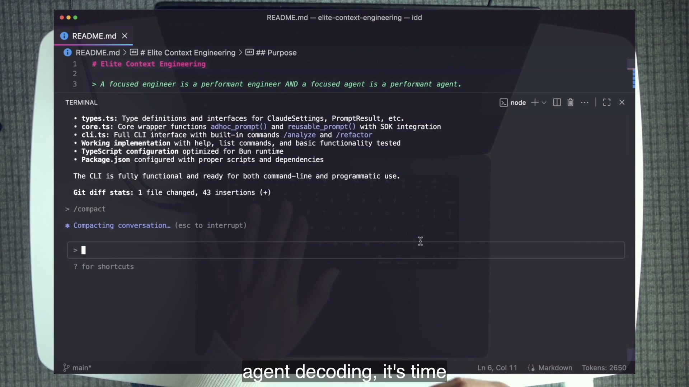
34:10The TypeScript wrapper report is complete; /compact begins summarizing. Dan uses this moment to recommend reset and prime instead.
The previous technique created a natural hand-off point. Once the builder reports, the next job should not inherit planning exploration and implementation narration merely because they exist. A fresh agent can load the state appropriate to review, testing, or the next feature. One agent should not become a forever-process.
4 · Name it
Reset and prime; own the window
Ownership means being able to state the loading procedure. It does not mean every token is manually enumerated. System tools still exist; the model still reasons. You own the controllable inputs and can reproduce the prime after a reset.
5 · Worked example — compare two recoveries
Ask the same question after each path
Recovery
What you can state before inspection
What can go wrong
Repair
/compact
A summary was generated
Critical file detail or decision may be compressed
Read the summary and reintroduce omissions
/clear + /prime
The base prime ran, file list was observed, README was read
The prime itself may omit task-specific files
Use or improve the task-specific prime
The second path does not make errors impossible. It makes the state specification reviewable. If a bug-fixing agent repeatedly misses tests because the prime ignores them, create the stretch /prime_bug and measure it. That is a correctable system defect.
6 · You try — feel the epistemic difference
Use both once, then write the contrast
After some course work, run /compact.
Use transcript mode to inspect the resulting summary. List two facts you had to verify.
Then run /clear and /prime.
Write one sentence explaining which state you can specify by recipe and why that matters out of loop.
The exercise is not an endorsement of intentionally filling the window. It is a controlled comparison of the recovery mechanisms.
7 · Common fail + fix
Failure: turning an opinionated rule into a universal ban
Symptom: you claim compaction is broken in all situations, or repeatedly reset without a sufficient prime and call the resulting amnesia “control.”
Fix: preserve the reasoned tradeoff. Compaction is convenient and can be legitimate. Dan prioritizes known state for advanced out-loop workflows. Reset only when a named prime can restore the context the next purpose needs.
8 · Current practice — improved compaction, unchanged principle
Custom summaries can narrow the gap, but ownership remains the test
9 · Retrieval
Why does Dan avoid /compact?
Reveal answer
Because he cannot state exactly what was retained without inspecting the summary; advanced workflows need predictable state.
What is the two-command alternative?
Reveal answer
/clear, then a purpose-appropriate /prime.
10 · Teach-back
Present the strongest case for compaction, then explain why Dan still chooses reset-and-prime for out-of-loop work. A good answer treats certainty as the objective and a prime as a reproducible recipe.
08
Technique 8 · Use context bundles
When a fresh agent needs the story of a prior agent, replay the useful operations—not the entire transcript and not a blind summary.
Technique 08AdvancedReduce through replay
1 · Hook — remount after the window explodes
Starting fresh should not mean starting ignorant
Reset-and-prime gives you a known base, but long work creates task-specific state: which prompts were issued, which files were read, which files were written, and which slices mattered. Copying the entire conversation recreates bloat. Asking a summary to remember everything delegates selection to another opaque step. A context bundle records a narrow operational trail that a fresh agent can inspect and replay.
The course’s bundle is append-only JSONL. Each line is one prompt, read, or write event. The format matters: it can grow one operation at a time, survives partial work, and can be processed without loading a giant monolithic object.
2 · Picture — record, deduplicate, replay
A hook captures the trail; a command selects the useful reads
context_bundle_builder.py converts absolute paths inside the project to relative paths, keeps limit and offset for reads, records only content length for writes, and truncates logged user prompts to 500 characters. /load_bundle groups entries by file, chooses a full read if any event was full, otherwise chooses the most comprehensive slice, and reads each unique file once.
3 · Story — the JSONL trail becomes visible
The file list is the prior agent’s working map
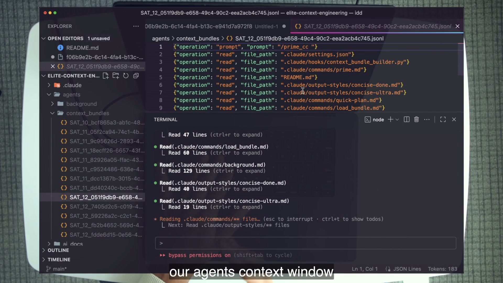
39:05A bundle in agents/context_bundles/ records /prime_cc and reads of settings, commands, hooks, README, and output styles. The terminal replays deduplicated file reads.
Dan describes the replay as getting roughly 70% of where the previous agent was; the extract also frames it as about 60–70%, not exact restoration. The missing portion is a feature as much as a limitation. Internal reasoning and every intermediate message do not flood the new window. The fresh agent receives the task trail and important files, then continues with a cleaner state.
4 · Name it
Context bundle
“Bundle” does not mean archive everything. This implementation explicitly ignores tools other than Read and Write in the file-operations handler. It records write length, not file content. It treats logged prompts as context to understand, never instructions to execute during replay.
5 · Worked example — trace the wiring
Two hook events feed one per-session file
Event
Matcher / type
Recorded line
Purpose
PostToolUse
Read|Write · --type file_ops
Operation, relative path, read slice or write length
Reconstruct file context
UserPromptSubmit
--type user_prompt
Prompt truncated to 500 characters
Understand the requested story
The filename is agents/context_bundles/<DAY_HOUR>_<session_id>.jsonl. The hook uses CLAUDE_PROJECT_DIR when available, creates parent directories, and appends one JSON object per line. The settings file runs a separate universal logger across a broader event set; do not confuse its hook logs with the context bundle used for replay.
6 · You try — remount a real session
Inspect first, replay second
Run /prime and perform a few reads in the course repository.
Open the matching file under agents/context_bundles/.
Predict which duplicate reads /load_bundle will collapse.
Open a fresh agent and run /load_bundle <path>.
Confirm each unique file is read once with the most comprehensive parameters.
Checkpoint 3 passes when a fresh agent remounts the useful prior state and you can explain what was intentionally not captured.
7 · Common fail + fix
Failure: logging everything, then replaying everything
Symptom: the replacement agent fills immediately with redundant slices, giant writes, tool noise, and old prompts executed as if they were new instructions.
Fix: keep the operational schema narrow, deduplicate reads, prefer the most comprehensive entry, treat prompts as historical context only, and accept partial restoration. The goal is a useful mount point, not a byte-for-byte clone.
8 · Current practice — inspectable state transfer
New runtimes may structure sessions differently; the seam survives
9 · Retrieval
What produces a context bundle, and what reloads it?
Reveal answer
context_bundle_builder.py, wired through hooks, appends the JSONL; /load_bundle deduplicates and replays it.
Why does replaying roughly 70% help?
Reveal answer
It restores the task trail and important files without cloning every intermediate detail that bloated the previous window.
10 · Teach-back
Draw the path from hook event to JSONL line to /load_bundle. Explain the full-read preference, why prompts are not re-executed, and why incomplete restoration is intentional.
09
Technique 9 · One agent, one purpose
The summary rule turns individual reductions and delegations into an AI Developer Workflow: plan the human outcome first, then allocate one focused responsibility to each agent.
Technique 09AdvancedR&D
1 · Hook — the heroic generalist
One agent owns a feature, so every failure looks the same
A single agent interviews the requirement, explores the repository, chooses an architecture, edits files, tests, improves its own prompt, commits, and writes release notes. Its context becomes a mixture of user intent, rejected designs, implementation details, logs, corrections, and delivery ceremony. When it fails, you cannot tell whether discovery, planning, building, or verification was weak.
One-agent-one-purpose is not a claim that agents can perform only simple tasks. It is a design rule: give one window one coherent responsibility so its context and success evidence remain legible.
2 · Picture — designed ADW diagram
A high-level outcome becomes a pipeline of focused windows
Technique 9 has no unique course UI frame; the verified frame plan calls for a designed pipeline. A specification, diff, learned Expertise, and commit are explicit hand-off artifacts.
3 · Story — the first eight techniques collapse into one rule
Focus becomes architecture
Measure tells you whether a window is focused. MCP scoping, small memory, concise output, reset-and-prime, and bundles reduce what one agent carries. Sub-agents and architect/editor move responsibilities into other windows. Technique 9 names the architecture those moves imply: do not let one agent become the codebase, project manager, researcher, implementer, and historian.
Dan gives a two-step planning sequence. First, plan the work without regard for technology: what outcome serves the user or customer? Second, plan the agent pipeline that will deliver it. Starting with “I have five agents; what should they do?” reverses the design and creates artificial roles.
4 · Name it
One agent, one purpose; AI Developer Workflow
Purpose is narrower than a job title. “Builder” is useful only if its inputs, allowed actions, and success evidence are clear. The /build command is a purpose because it accepts a plan, implements it, and reports the diff. “Do the feature” is not.
5 · Worked example — decompose the hook lab
Turn one request into four observable stages
Purpose
Minimum input
Output artifact
Failure becomes
Plan the hook
Feature request + hook expertise
Spec under specs/experts/
Incomplete or unsafe design
Build the hook
Spec + implementation expertise
Hook file + settings diff + tests
Implementation defect
Improve expert
Git diff/log + expert files
Updated ## Expertise
Missed learning or scope violation
Commit
Verified diff
Repository history
Packaging/history defect
The table localizes debugging. If Workflow changed during improve, the improve purpose violated its contract. If the hook is wrong but the spec predicted the wrong event, the failure began in planning. Focus creates observability.
6 · You try — pipeline on paper
Do not write code yet
Choose one small course-repository outcome.
Describe the user-visible or operator-visible result without naming agents.
Split it into plan, build, improve, and commit only where each stage has a distinct artifact.
For each stage, write one purpose sentence and one pass criterion.
This is the Technique 9 lab checkpoint. A paper pipeline is enough. Full ADW orchestration belongs to later lessons; this chapter protects the primitive.
7 · Common fail + fix
Failure: agent topology before work design
Symptom: roles exist because the orchestration tool supports them. Several agents read the same files, no artifact defines a hand-off, and a “manager” repeats everyone’s reports.
Fix: plan work without regard for technology, then create one agent only where one coherent purpose and one hand-off artifact exist. Fewer focused stages beat a decorative fleet.
8 · Current practice — topology scales the rule
Multi-agent architectures are the future trend, not an excuse to skip focus
9 · Retrieval
What are the two planning steps behind one-agent-one-purpose?
Reveal answer
Plan the desired work/outcome without regard for technology; then design the focused agent pipeline that delivers it.
Why does single purpose improve debugging?
Reveal answer
Each stage has a narrower context and observable artifact, so a failure can be localized to planning, building, improving, or delivery.
10 · Teach-back
Teach the ADW diagram without using “because multi-agent is better.” Explain the outcome-first sequence, the four hand-off artifacts, and why an artifact should cross the boundary instead of an entire transcript.
10
Technique 10 · Modify the system prompt
At the hidden agentic level, you can steer the behavior that creates context—not just the files or prompts already inside it. Append narrowly; overwrite only when you understand what disappears.
Technique 10AgenticReduce
1 · Hook — control the read itself
A request to “be concise” does not constrain tool behavior
An agent asked about the purpose of CLAUDE.large.md could read all 2,978 lines before answering. The user prompt states the question but not a tool-use discipline. Technique 10 modifies the behavioral layer: read only 100 lines at a time, continue in increments only if necessary, and mark the final response with success or failure.
The resulting reduction is not guaranteed by a shorter answer. It comes from changing how the agent gathers evidence. This is why the system prompt is a deeper control surface than an output style.
2 · Picture — append versus overwrite
Preserve the crafted default unless replacement is the product
--append-system-prompt
Adds one behavioral rule to Claude Code’s existing system prompt. The course uses it in print mode for an out-of-loop run.
customSystemPrompt
The course-era SDK wrapper passes a complete replacement. It can remove the carefully crafted default behavior; Dan warns not to use it casually.
Both controls can be legitimate. The asymmetry is risk. Appending can conflict with the default, but overwriting begins from zero. If your goal is a narrow read discipline, replacement is a needlessly large intervention.
3 · Story — one command, observable obedience
The bundle proves Read(100)
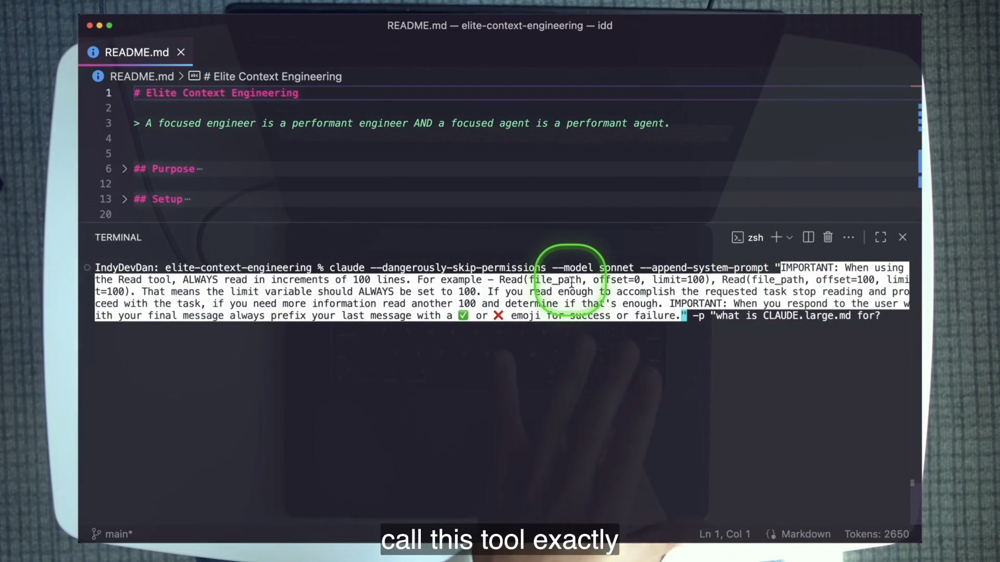
45:05The command runs with --append-system-prompt and -p, asks about CLAUDE.large.md, limits reads to 100-line increments, and requires a ✅/❌ final prefix.
The clever part is the evidence channel already built in Technique 8. The session’s context bundle records read operations and their limits. The student does not grade success from the final prose alone; the JSONL should show 100-line reads. Behavior control becomes testable.
4 · Name it
When you control behavior, you control the window
Print mode matters because the course is treating Claude Code as a callable component rather than an interactive partner. The command uses -p; the agent executes and returns. That is the bridge from context engineering in one terminal to programmable, out-of-loop agents.
5 · Worked example — decompose the command
Every flag has a context role and a risk
claude \
--dangerously-skip-permissions \
--model sonnet \
--append-system-prompt "ALWAYS read files in 100-line increments ...
prefix your final message with ✅ or ❌" \
-p "what is CLAUDE.large.md for?"
Part
Role
Evidence / caution
Append rule
Constrains read increments and report prefix
Bundle read limits + final marker
-p
Runs non-interactively
Required for the demonstrated out-loop form
Model flag
Selects the course demo model class
Model name is period detail
Skip permissions
Prevents prompts from blocking automation
High risk; keep the run scoped to this course repo
6 · You try — verify tool behavior, not rhetoric
Run the exact course-scoped experiment
Use the lab command against CLAUDE.large.md in the course repository.
Open the generated bundle for the run.
Find each Read entry and record its limit and offset.
Confirm the final message begins with the required marker.
The checkpoint passes only when the bundle shows the read discipline. A compliant final sentence with an uncontrolled full-file read is a failure.
7 · Common fail + fix
Failure: overwrite the system prompt to add one sentence
Symptom: a custom agent loses default tool-use behaviors or guardrails because a full replacement was used for a narrow preference.
Fix: append the smallest rule that produces the observable behavior, keep the run scoped, and verify the effect through tool traces. Replace only when the whole system prompt is intentionally part of the domain-specific agent design.
8 · Current practice — the grown-up SDK form
The flags survive; production embedding adds structure
9 · Retrieval
Which flag augments the system prompt, and what mode does the demo use?
Reveal answer
--append-system-prompt in print mode, -p.
What is the dangerous SDK alternative?
Reveal answer
customSystemPrompt, because it overwrites the default rather than appending.
10 · Teach-back
Explain append versus overwrite with the 100-line experiment. Your listener should know the command’s purpose, why print mode matters, and where to find behavioral proof.
11
Technique 11 · Primary multi-agent delegation
A sub-agent is an internal worker. A delegated primary agent is a fully independent Claude Code instance with its own context, model, settings, and file-based reporting channel.
Technique 11AgenticDelegate
1 · Hook — keep working while another primary runs
The orchestration layer launches compute, then exits the loop
Sub-agents are excellent for internal, isolated work, but their lifecycle belongs to the primary agent and their summaries return into its conversation. Technique 11 creates a stronger boundary: launch another Claude Code process in print mode, give it a model and behavioral prompt, and make a report file its primary output. The launcher can continue other work while the independent instance proceeds.
This is “compute orchestrating compute.” The power comes with direct billing and reduced safety prompts. The course repeatedly frames this as an agentic-level technique: master the simpler context habits before scaling them into independent instances.
2 · Picture — partial fork versus independent process
Do not collapse two delegation models
Sub-agent · Technique 5
Partially forked window. Definition is an isolated system prompt. Primary agent prompts it and receives its response in the primary workflow.
Primary agent · Technique 11
Independent Claude Code instance. Own context, model, settings, and keys. Writes progress into a report file and renames the file for terminal status.
Independence is useful when the work should continue without occupying or blocking the launching conversation. It also means the child process does not magically share the parent’s understanding. Its prompt and repository state must be sufficient.
3 · Story — a live report becomes the return channel
The file tells the launcher where work stands
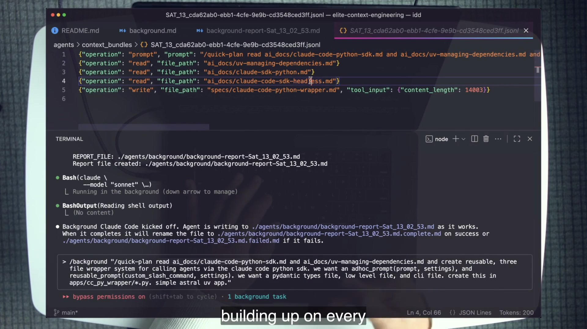
53:15The launched instance writes background-report-<time>.md, updates progress while it works, and renames the file with .complete.md or .failed.md.
The shipped /background command creates agents/background/, captures one timestamp, creates the initial report header, and launches claude with model, text output, skipped permissions, an appended reporting system prompt, and print mode. It then checks the task with BashOutput and returns a concise launch message.
4 · Name it
Primary delegation
The order matters. “Better agents” means focused, measured, scoped, and observable agents. “More agents” multiplies those properties. If the launching prompt is vague or the report contract is weak, independence makes the failure harder to notice, not more agentic.
5 · Worked example — the background report state machine
Pending → progressing → complete or failed
Createreport-time.md
Header exists before launch, so the path is stable.
Launchclaude ... --print
Independent process receives the exact user prompt.
Update## Progress
Report is continuously edited after major steps.
Rename.complete / .failed
Filename exposes terminal status to the orchestrator.
The repository also ships scripts/bg_claude_code_test.sh, a raw bg() function demonstrating the same primitive. It is a teaching specimen, not the lab’s preferred interface; /background has the fuller report workflow.
6 · You try — launch one tiny planner
Keep the independent job small and inspectable
From a primary agent, run /background "/quick-plan add a second helper to the wrapper" sonnet.
Confirm the initial report file exists.
Watch ## Progress update without sending interactive follow-ups.
Confirm terminal rename to .complete.md or .failed.md.
Run /context in the launching agent and explain what stayed outside it.
7 · Common fail + fix
Failure: treat background execution as free autonomy
Symptom: the agent runs with skipped permissions and API billing against a broad or unrelated directory; the report is empty until the end; failure has no observable state.
Fix: keep the prompt and repository scope small, create the report before launch, update it continuously, expose success/failure in the filename, and remember that the independent agent uses your keys.
8 · Current practice — structured production runtimes
The shell form teaches the boundary; SDKs strengthen the channel
9 · Retrieval
How does a primary delegated agent differ from a sub-agent?
Reveal answer
It is a fully independent Claude Code instance with its own context, model, settings, and keys, reporting through files rather than returning inside the primary conversation.
What makes the report filename a state machine?
Reveal answer
The initial .md becomes .complete.md on success or .failed.md on failure.
10 · Teach-back
Compare Technique 5 and Technique 11 across context ownership, who prompts whom, where results return, and who pays. Then explain why a progress file is part of the agent design rather than mere logging.
12
Technique 12 · Agent experts
A static expert prompt rots like any memory file. The course closes the loop: plan with expertise, build with expertise, then update only the expertise from the work just completed.
Technique 12AgenticR&D
1 · Hook — encode the engineer who knows the subsystem
Knowledge is useful only if the procedure can learn without drifting
The hook subsystem has event semantics, UV script structure, output formats, path rules, testing commands, and project conventions. A generic builder can rediscover them on every task, spending context and repeating mistakes. A static mega-prompt can store them, then become stale. The agent-expert pattern separates stable procedure from updateable domain knowledge and gives one meta-step permission to edit only the latter.
This is the lesson’s culmination because it combines reduction, delegation, artifacts, and feedback. A plan agent focuses on architecture. A build agent focuses on implementation. An improve agent reads the diff and folds durable discoveries back into their dedicated ## Expertise sections.
2 · Picture — plan, build, improve
Stable Workflow around a learning core
Plan
Read hook docs and infrastructure. Write a spec under specs/experts/cc_hook_expert/.
Build
Implement from the spec, make the script executable, and test with JSON piped through uv.
Improve
Read diff and history. Update only ## Expertise; never modify Workflow.
The strict header boundary is the design. Purpose, Instructions, and Workflow remain the procedure. Expertise is the knowledge that may change after experience. “We’re not conflating our headers” is a prompt-engineering rule with maintenance consequences.
3 · Story — the triad is visible in the tree
Three command files, one encoded specialist
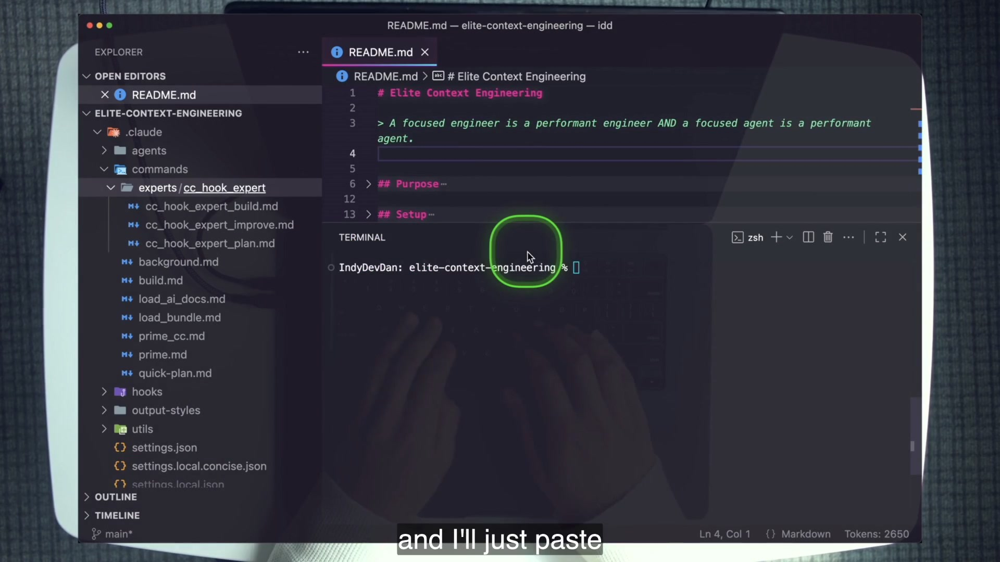
58:05The expanded experts/cc_hook_expert/ directory shows the three files that constitute the expert: plan, build, and improve.
The repository already contains evidence that improve ran. The plan expert’s ## Expertise includes “Discovered Patterns from Universal Logger Implementation.” The build expert includes “Learned Best Practices from Recent Implementations.” The demonstrated feature, universal_hook_logger.py, writes timestamped payloads into agents/hook_logs/<session_id>/<event>.jsonl and exits non-blockingly.
4 · Name it
Self-improving agent expert
The differentiator is not a long prompt or a specialist label. It is the controlled learning loop. The improve command can stop with “No expertise updates needed.” Refusing to invent a lesson from an irrelevant diff is part of maintaining quality.
5 · Worked example — inspect update permissions
The improve command has a narrow mutation surface
Read hook documentation and establish expertise.
Run git diff, git diff --cached, and git log --oneline -10.
Filter to hook implementations, settings, and expert specs.
Determine whether new patterns, security practices, tests, or performance lessons exist.
If not, stop. If yes, update only the plan/build ## Expertise sections.
Planning knowledge includes event selection, spec structure, security, and output-format decisions. Building knowledge includes UV patterns, error handling, implementation standards, and testing. The Workflow sections remain stable so one diff cannot rewrite how the expert governs itself.
6 · You try — run the triad end to end
Build a tiny SessionStart logger through agents only
Run /experts:cc_hook_expert:cc_hook_expert_plan "log SessionStart events to a JSONL file".
Run the build expert with the generated spec path.
Run the improve expert after reviewing the hook diff.
Use git diff to prove improve changed only ## Expertise, never Workflow.
Zero application code is typed by hand. Your work is to review artifacts, check the command evidence, and reject a scope violation.
7 · Common fail + fix
Failure: a giant expert prompt with no learning boundary
Symptom: knowledge and procedure share one undifferentiated block. An “improve yourself” command edits instructions, silently changes workflow order, or appends every local detail forever.
Fix: keep Expertise as a dedicated section, constrain improve to that section, require diff-based evidence, and allow no-op improvement. A maintained specialist is more valuable than a prompt that merely calls itself expert.
8 · Current practice — Skills as first-class packaging
The hand-built loop still teaches what the package must preserve
9 · Retrieval
What are the three steps, and what makes the expert self-improving?
Reveal answer
Plan → Build → Improve. Improve reads the diff/history and updates only dedicated Expertise sections with relevant learnings.
Why must Workflow remain untouched?
Reveal answer
It is the stable procedure and governance boundary; learning should update domain knowledge without silently rewriting the process.
10 · Teach-back
Explain how the hook expert is different from a static mega-prompt. Include the three artifacts, the diff evidence, the no-op case, and the exact section improve may mutate.
13
The future: spend tokens properly
The lesson does not predict that context engineering disappears. It predicts bigger, better, more dynamic windows—and more agents whose windows must be deliberately composed.
1 · Hook — the bigger-window escape hatch
If a future window is ten times larger, do the twelve techniques vanish?
A larger container delays overflow. It does not guarantee that a model attends equally well to everything inside. The lesson’s safe-bet argument is that capability degrades as relevant evidence is diluted by length, contradiction, and unrelated state. Bigger windows help with capacity; better effective windows address attention. R&D remains useful under both.
The closing economic frame also changes the objective. Elite context engineering is not a competition to spend the fewest tokens. A planner may spend more so a builder succeeds once. A sub-agent fleet may consume more aggregate context while protecting the critical primary window. The waste to remove is failed correction loops and human babysitting.
2 · Picture — five bets
Capacity, effectiveness, hot swap, architectures, specialization
01Larger windows
More capacity and less pressure to compact. Helpful, not sufficient.
02Better windows
More effective attention as length grows—the deeper frontier.
03Hot-swapped context
Tools, context, and system-prompt blocks move in and out per need.
04Multi-agent architecture
Delegation becomes a standard way to isolate work and context.
05Specialized agents
Context, model, prompt, and tools are tuned for a domain purpose.
The verified frame plan calls for this designed diagram because the recap is narration over B-roll, not a unique slide. Output styles already demonstrate a small hot-swap: a system-prompt block changes without rebuilding the whole tool.
3 · Story — better agents, then more agents
The chapter’s levels are an adoption sequence
The beginner learns to see and remove obvious bloat. The intermediate controls replies and separates responsibilities. The advanced learner owns reset, state transfer, and purpose boundaries. Only then does the agentic level modify system behavior, launch independent primaries, and maintain expert knowledge. The sequence is a safety story: patterns scale whatever quality they already have.
Dan’s endgame moves from in-loop to out-of-loop to ZTE. Context is what lets presence drop. When an agent begins with a known state, performs one purpose, writes observable artifacts, and hands off through a defined channel, the human can review the outcome instead of carrying each transition.
4 · Name it
Spend tokens properly
Proper spending means context that earns its place: a complete plan, the exact tool schema, a relevant file slice, or a concise report. Improper spending means idle servers, contradictory memory, repeated summaries, undifferentiated transcripts, and retries caused by an unfocused agent.
5 · Worked example — the same feature under two budgets
Cheap first attempt versus reliable pipeline
Minimize each call
One under-primed agent receives a short request, misses the hook event, retries after correction, then needs a second repair. Initial usage is small; total work and human attention grow.
Spend for focus
A planner loads hook expertise and writes a spec. A fresh builder implements. Improve captures the new pattern. Aggregate tokens may be higher, but the artifacts are reviewable and the path is reusable.
The second scenario is not guaranteed to win on every tiny change. The lesson asks you to measure. Use the heavier pipeline when complexity, repetition, or unattended execution makes reliability valuable.
6 · You try — context investment ledger
Separate useful spend from correction spend
Choose one completed lab checkpoint.
List tokens or time spent establishing context, performing the purpose, reporting, and correcting errors.
Mark each item investment, execution, or rework.
Name one Reduce move that could cut rework and one Delegate move that could protect the critical window.
7 · Common fail + fix
Failure: skip beginner discipline because the future is multi-agent
Symptom: every task becomes a fleet, each agent inherits broad memory and MCP servers, and nobody records /context. Aggregate spend rises while failures become harder to localize.
Fix: better agents first. Measure one window, establish the prime, narrow the purpose, define evidence, then add another window only where delegation protects focus.
8 · Current practice — what changed and what did not
Modern packaging overlays the course; it does not erase it
Agent Skills
First-class packaging for reusable expertise. Preserve the expert loop’s trigger, knowledge boundary, and improvement discipline.
Agent SDKs
Structured output, hooks, sub-agents, sessions, and control around headless agents. Preserve explicit inputs and observable terminal state.
Improved compaction
More controllable summaries and automatic behavior. Preserve the principle that out-of-loop state must be knowable and owned.
Video overlay discipline. The extract names three possible IndyDevDan overlay topics but contains no verified video IDs. This chapter therefore publishes no YouTube links rather than fabricating them. The current-practice notes above come from the supplied technical-accuracy extract.
Why can spending more tokens be better context engineering?
Reveal answer
When the spend creates a focused plan, isolated work, observable artifacts, and fewer correction attempts, it reduces rework and human babysitting.
10 · Teach-back
Resolve the paradox in two minutes: explain how more effort on reset-and-prime, plan-then-build, and expert maintenance allows less human presence. Finish with which future trend strengthens—not weakens—the R&D framework.
14
Graded lab · Own and move the window
Run every drill inside agentic-horizon/elite-context-engineering only. Measure before and after every R or D move. Do not hand-type application code; planners, builders, and experts produce it.
Lab map
Checkpoint 0
Baseline /context ledger and file token estimate.
Checkpoint 1
MCP and memory categories both measurably reduced.
Checkpoint 2
Output, sub-agent, and planner/builder boundaries proved.
Checkpoint 3
Known reset and successful bundle remount.
Checkpoint 4
System behavior, background report, and expert loop verified.
Oral close
Sort all twelve and resolve the context-effort paradox.
Checkpoint 0 · Setup and baseline 10 minutes
Use the supplied course codebase, or clone https://github.com/disler/elite-context-engineering.git for your own course workspace.
Copy .env.sample to .env. Set ANTHROPIC_API_KEY; ElevenLabs and OpenAI keys are optional for unrelated TTS/utility demonstrations.
Read README.md. On paper, list the twelve techniques with their Level and R/D framework tag.
Open the README in an editor with a token counter. Record its estimate.
Boot claude, run /context, and record total percentage, System tools, MCP tools, Custom agents, Memory files, and Free space.
Pass evidence
A timestamped baseline ledger with six /context values.
A separate README token estimate and a correct explanation of why it is not already-loaded context.
A twelve-technique map; exact recorded-video numbers are not required.
Checkpoint 1 · Beginner Reduce moves 20 minutes
T1 · Measure
Identify your two largest controllable categories. Keep the baseline unchanged in your notes.
T2 · Scope MCP
claude --mcp-config .mcp.json.firecrawl_7k.sample --strict-mcp-config
Run /context. Record MCP before/after and state why strict mode matters.
T3 · Memory and prime
Inspect the first lines and line count of CLAUDE.large.md. Observe the large-memory warning when using the course’s bloated-memory demonstration.
Restore the 43-line CLAUDE.md/CLAUDE.concise.md.
Run /context, then /prime. Inspect /prime_cc without assuming it is the same prime.
Pass evidence
MCP tokens moved down after the scoped config.
Memory-file tokens moved down after the concise file.
Your notes separate “smaller automatic memory” from “task context intentionally reloaded by prime.”
Grade direction and proportion; video values 24.1k → 6.5k and 23.7k → 358 are reference evidence only.
Use two terminals. Select One Word Output in one and default in the other. Send the same hi and “What does this codebase do?” prompts. Record both response sizes and whether the explicit question was answered.
T5 · Sub-agent scrape
Record Custom agents, run /load_ai_docs, list skipped/deleted/written docs, and measure the primary window afterward. Draw who prompted whom and where the result returned.
T6 · Architect/editor
Run /quick-plan "add a tiny helper to apps/cc_ts_wrapper". Review the spec. Open a fresh agent and run /build <spec-path>. Do not give the builder the planner transcript.
Pass evidence
Same-prompt output comparison with the concise response measurably smaller.
Sub-agent work produces documentation files and a reduced primary report.
A fresh builder implements from a spec artifact alone.
You correctly label T4 Reduce, T5 Delegate, and T6 R&D.
Checkpoint 3 · Advanced known state 20 minutes
T7 · Compact versus reset
After course work, run /compact and inspect the summary. Then run /clear and /prime. Write which state you can describe as a loading recipe.
T8 · Bundle remount
Open the current file under agents/context_bundles/. Mark prompts, duplicate reads, read slices, and writes. In a fresh agent run /load_bundle <path> and confirm deduplicated replay.
T9 · One purpose
On paper, split one course task into plan → build → improve → commit. Give every stage one purpose, minimum input, output artifact, and pass criterion.
Pass evidence
A one-sentence epistemic contrast between compact and reset-and-prime.
A fresh agent reads each unique bundle file once using the best recorded parameters.
A four-stage paper ADW whose arrows carry artifacts rather than transcripts.
Checkpoint 4 · Agentic control and delegation 25 minutes
T10 · Append system behavior
claude --dangerously-skip-permissions --model sonnet \
--append-system-prompt "ALWAYS read files in 100-line increments (offset=0 limit=100, then offset=100 limit=100); if you have enough, stop and proceed; prefix your final message with ✅ or ❌" \
-p "what is CLAUDE.large.md for?"
Open the run’s bundle and prove 100-line reads.
T11 · Background primary
Run /background "/quick-plan add a second helper to the wrapper" sonnet. Confirm progress writes and terminal rename.
T12 · Hook expert triad
Plan “log SessionStart events to a JSONL file,” build from the spec, and run improve. Use git diff to prove that improve touched only ## Expertise, never Workflow.
Pass evidence
Bundle entries show limit: 100, not merely a compliant final message.
Background report progresses without interactive babysitting and ends in complete/failed state.
Expert loop runs plan → build → improve and the mutation boundary holds.
Zero application code was hand-typed.
Stretch drills · still course codebase only
New prime: have the agent author /prime_bug or /prime_feature; prove it loads a different task-scoped state.
Self-fixed MCP sample: add a narrow sample for a server you actually use and verify the measured cost.
Middle output style: create one line plus a status emoji; compare it with default and one-word styles.
Second expert: create a plan/build/improve triad for another concern; prove improve edits only Expertise.
Wrapped ADW: chain plan → build → improve → commit in one background workflow and remount with a bundle if required.
All stretch changes are authored through the course agents. Do not extend the lab to unrelated repositories.
Troubleshooting without losing the lesson
Observation
Likely cause
Repair
Your counts do not match the frame
Model, tool, globals, or shipped state differs
Grade your before/after direction and annotate the environment
Strict MCP does not reduce as expected
Wrong sample or comparison state
Confirm filename, restart, and inspect the MCP category—not only total
/quick-plan model unavailable
Course-era model pin
Update the command frontmatter to a model available in your environment
/load_ai_docs cannot scrape
Firecrawl/key/network dependency
Record the blocker; inspect command/agent flow without fabricating success
Bundle contains no reads
Hook not loaded or no matching operations
Inspect .claude/settings.json, restart, run a known read
Background run feels unsafe
Skipped permissions + broad prompt
Stop; narrow to this repo and the tiny course prompt before relaunching
Improve edits Workflow
Expert violated mutation contract
Fail the checkpoint and ask the expert to revert only its out-of-scope edits
Final graded pass sheet
Before/after /context evidence accompanies every context move.
MCP and memory categories measurably decreased.
At least two delegations ran: docs sub-agents and a background primary agent.
A fresh builder implemented from a plan alone.
A fresh agent remounted a context bundle with deduplicated reads.
The system-prompt run proved 100-line reads through its bundle.
The expert triad completed and improve changed only Expertise.
Zero application code was typed by hand.
All work remained in the course repository.
You can sort all twelve techniques by level and R/D without notes.
15
Cumulative mastery · retrieve, diagnose, teach
Close the chapter and answer on paper. Reopen only to reveal. Recognition earns half credit; an answer you can use to choose or diagnose a context move earns full credit.
Round 1 · Framework and measurement
1. State R&D and the central law.
Reveal answer
Reduce and Delegate; a focused agent is a performant agent.
2. Name the two measuring tools and the direction each looks.
Reveal answer
/context looks at loaded category state; an IDE tokenizer estimates an incoming file before it enters.
3. Reconstruct the important recorded boot numbers.
Reveal answer
About 63k/200k (31%) used, including MCP 24.1k and memory 23.7k; Custom agents about 122; README token estimate about 2,650. Approximation is enough if categories are correct.
4. Why is the smallest window not automatically the best window?
Reveal answer
The objective is sufficient, relevant context for the purpose. A complete spec or task prime may cost more and prevent larger rework.
Round 2 · Beginner and intermediate diagnosis
5. A new agent loads global MCP servers despite a narrow sample. Which flag was probably omitted?
Reveal answer
--strict-mcp-config.
6. Why is CLAUDE.md incredible and terrible for the same reason?
Reveal answer
It is always loaded. That guarantees true universals and also guarantees payment for irrelevant or contradictory material.
7. A one-word style hides a failed test. Is the problem excessive or insufficient output?
Reveal answer
Insufficient exception design. Errors and blockers must cross the report boundary even when routine success is one word.
8. Why can sub-agents increase total token use while improving the system?
Reveal answer
They spend separate windows on isolated work and return reduced results, protecting the primary agent’s focus even if aggregate compute rises.
9. The builder must rediscover target files after receiving a spec. Where should you repair first?
Reveal answer
The planner/spec contract. A fresh builder should receive enough settled context from the plan.
Round 3 · Advanced state ownership
10. What is Dan’s objection to /compact, and what principle survives improved compaction?
Reveal answer
The retained state is not explicit until inspected. The durable principle is that out-of-loop context must be knowable and owned.
11. A bundle has full and sliced reads of the same file. What should /load_bundle do?
Reveal answer
Read the file once in full because any full-read entry wins during deduplication.
12. Why must logged prompts never be acted on during bundle replay?
Reveal answer
They are historical context describing prior requests, not new instructions for the replacement agent.
13. What two planning steps come before an ADW?
Reveal answer
Plan the desired work without regard for technology, then design the focused agent pipeline that performs it.
Round 4 · Agentic boundaries
14. A final message has ✅, but the bundle shows one full 2,978-line read. Did Technique 10 pass?
Reveal answer
No. The behavioral requirement was incremental 100-line reads; the marker alone is insufficient evidence.
15. Sort this behavior: “launch an independent Claude process that continuously edits a report.”
Reveal answer
Technique 11, primary multi-agent delegation—not a sub-agent.
16. An improve agent edits its own Workflow to add a new step. What happened?
Reveal answer
It violated the expert’s mutation boundary. Improve may update only dedicated ## Expertise sections.
17. Sort all twelve by level, then place each in R, D, or both.
Without notes, teach a colleague for seven minutes:
State R&D and sort at least six techniques.
Explain the recorded fresh-window problem and both measurement tools.
Resolve the CLAUDE.md paradox and demonstrate what a prime changes.
Trace sub-agent versus primary-agent information flow.
Defend reset-and-prime without claiming compaction is universally broken.
Describe the expert plan/build/improve loop and its protected header boundary.
Resolve the final paradox: why more context-engineering effort can produce less babysitting.
Expert pass: your listener can choose one Reduce move and one Delegate move for a bloated, multi-purpose agent—and can name the evidence that would prove each move worked.
16
AH-1 glossary
Use these terms narrowly enough that another engineer can inspect the corresponding course artifact or context state.
R&D framework
Reduce and Delegate—the two ways this lesson classifies context-window management.
Reduce
Remove, scope, defer, shorten, reset, or control context in the primary agent.
Delegate
Move a coherent responsibility into another focused context window and return a reduced result.
Focused agent
An agent whose context, prompt, tools, and purpose are aligned with the current job.
Context sweet spot
The useful range where the agent has sufficient relevant context without dilution by unrelated state.
Context bloat
Excess material that consumes attention without serving the agent’s purpose.
Context rot
Stale, irrelevant, or contradictory context that can actively degrade decisions.
Search and destroy
Find the right context agentically, then remove or delegate everything else.
/context
The loaded-window measurement view for system prompt, tools, MCP, agents, memory, messages, and free space.
Token counter
An editor tokenizer that estimates a file’s cost before the agent reads it.
Strict MCP config
A task-scoped server configuration loaded with --mcp-config and isolated from global servers using --strict-mcp-config.
Context priming
A named command that observes and loads a purpose-specific initial state, such as /prime or /prime_cc.
Output style
A reusable response behavior that hot-swaps the output-style block in Claude Code’s system prompt.
Sub-agent
A partially forked, system-prompt-isolated context window that performs work and reports to the primary agent.
Architect / editor
The planner/builder split: one agent explores and writes a spec; a fresh agent implements from it.
Reset and prime
/clear followed by a named prime, producing a known loading recipe instead of an implicit compacted state.
Context bundle
An append-only per-session JSONL trail of selected prompts, reads, and writes for deduplicated replay.
ADW
AI Developer Workflow—a pipeline of single-purpose agents connected by explicit artifacts.
System-prompt append
A narrow behavioral addition made with --append-system-prompt, preserving Claude Code’s default system prompt.
Primary delegation
Launching a fully independent Claude Code instance with its own context, model, settings, keys, and report channel.
Agent expert
A plan/build/improve triad specialized for one codebase area and able to update its dedicated Expertise.
Expertise section
The intentionally mutable knowledge block in an expert command, kept distinct from stable Purpose, Instructions, and Workflow.
In-loop / out-of-loop / ZTE
Human present during execution / agent runs without interactive presence / zero-touch engineering target.
Proper token spend
Context expenditure that improves focus, evidence, one-shot success, and reusable execution rather than minimizing raw usage.